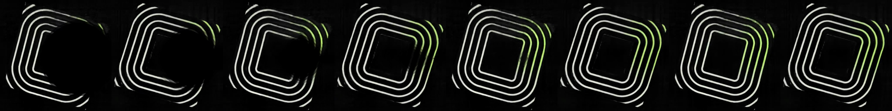
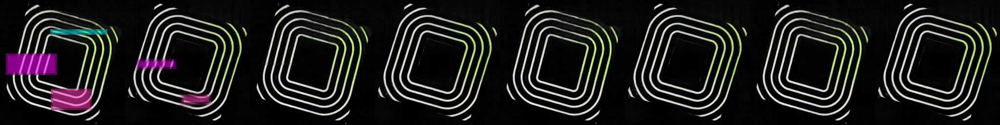

Trained neural cellular automata · native 512 × 512
Fast motion. Visible rebuilding.
The training target now advances four contours per second, eight times its
previous speed. All clips below play at the actual 64fps training cadence.
Large true-black circle. The surviving rim seeds rebuilding toward the core.
Pink, cyan and magenta state damage. Colored blocks and shifted contours repair over several steps.
New-seed validation: blackout recovery 0.36–0.47s,
core recovery 0.50–0.64s, chromatic damage 0.11–0.25s.
Beat flashes retain quick recovery. These are learned state updates with a
supervised local-growth prior; there is no video crossfade.
Inspect the actual faster teacher and clean trained loop
Teacher · one contour advance every 0.25 seconds
Trained model · signed motion cosine 0.947
More trained distortions
RGB-split distortions
Horizontal tears
Synthetic brightness/latent kick, with integrity preserved. No audio input.
First-second rebuilding samples


Model, exact targets and reproduction ·
Training and validation report ·
Four-panel comparison